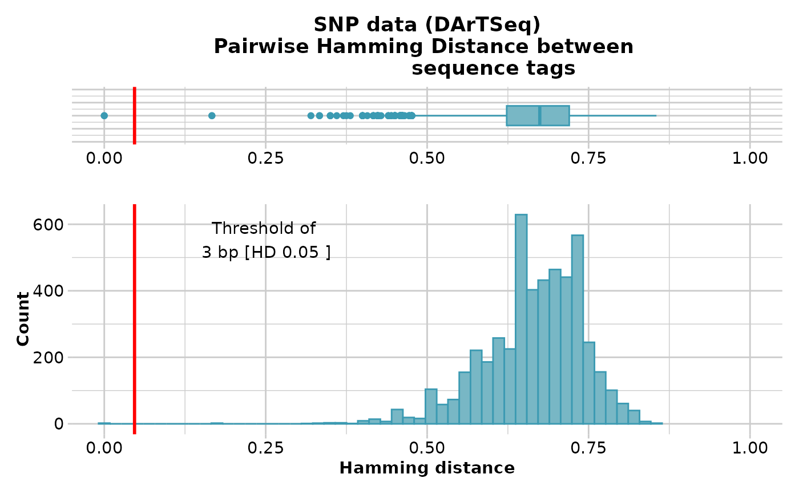

R/gl.report.hamming.r
gl.report.hamming.RdHamming distance is calculated as the number of base differences between two sequences which can be expressed as a count or a proportion. Typically, it is calculated between two sequences of equal length. In the context of DArT trimmed sequences, which differ in length but which are anchored to the left by the restriction enzyme recognition sequence, it is sensible to compare the two trimmed sequences starting from immediately after the common recognition sequence and terminating at the last base of the shorter sequence.
gl.report.hamming(
x,
rs = 5,
threshold = 3,
taglength = 69,
plot.out = TRUE,
plot_theme = theme_dartR(),
plot_colors = two_colors,
probar = FALSE,
save2tmp = FALSE,
verbose = NULL
)Name of the genlight object containing the SNP data [required].
Number of bases in the restriction enzyme recognition sequence [default 5].
Minimum acceptable base pair difference for display on the boxplot and histogram [default 3].
Typical length of the sequence tags [default 69].
Specify if plot is to be produced [default TRUE].
Theme for the plot. See Details for options [default theme_dartR()].
List of two color names for the borders and fill of the plots [default two_colors].
If TRUE, then a progress bar is displayed on long loops [default TRUE].
If TRUE, saves any ggplots and listings to the session temporary directory (tempdir) [default FALSE].
Verbosity: 0, silent or fatal errors; 1, begin and end; 2, progress log; 3, progress and results summary; 5, full report [default 2, unless specified using gl.set.verbosity].
Returns unaltered genlight object
The function gl.filter.hamming will filter out one of
two loci if their Hamming distance is less than a specified percentage
Hamming distance can be computed by exploiting the fact that the dot product of two binary vectors x and (1-y) counts the corresponding elements that are different between x and y. This approach can also be used for vectors that contain more than two possible values at each position (e.g. A, C, T or G).
If a pair of DNA sequences are of differing length, the longer is truncated.
The algorithm is that of Johann de Jong
https://johanndejong.wordpress.com/2015/10/02/faster-hamming-distance-in-r-2/
as implemented in utils.hamming
Plots and table are saved to the session's temporary directory (tempdir)
Examples of other themes that can be used can be consulted in
Other report functions:
gl.report.bases(),
gl.report.callrate(),
gl.report.diversity(),
gl.report.hwe(),
gl.report.ld.map(),
gl.report.locmetric(),
gl.report.maf(),
gl.report.monomorphs(),
gl.report.overshoot(),
gl.report.pa(),
gl.report.parent.offspring(),
gl.report.rdepth(),
gl.report.replicates(),
gl.report.reproducibility(),
gl.report.secondaries(),
gl.report.sexlinked(),
gl.report.taglength()
# \donttest{
gl.report.hamming(testset.gl[,1:100])
#> Starting gl.report.hamming
#> Processing genlight object with SNP data
#> Calculating pairwise Hamming distances between trimmed
#> Reference sequence tags
#> Plotting boxplot and histogram of Hamming distance,
#> showing a threshold of 3 bp [HD 0.05 ]
#> No. of loci = 100
#> No. of individuals = 250
#> Minimum Hamming distance: 0
#> Maximum Hamming distance: 0.86
#> Mean Hamming Distance 0.66+/-0.077 SD
#> No. of pairs with Hamming Distance less than or equal to 3 base pairs: 2
#>

#> Quantile Threshold Retained Percent Filtered Percent
#> 1 100% 0.8550725 2 0.0 4948 100.0
#> 2 95% 0.7681159 334 6.7 4616 93.3
#> 3 90% 0.7536232 525 10.6 4425 89.4
#> 4 85% 0.7391304 864 17.5 4086 82.5
#> 5 80% 0.7246377 1179 23.8 3771 76.2
#> 6 75% 0.7200000 1264 25.5 3686 74.5
#> 7 70% 0.7101449 1567 31.7 3383 68.3
#> 8 65% 0.6956522 1999 40.4 2951 59.6
#> 9 60% 0.6956522 1999 40.4 2951 59.6
#> 10 55% 0.6811594 2381 48.1 2569 51.9
#> 11 50% 0.6744186 2480 50.1 2470 49.9
#> 12 45% 0.6666667 2871 58.0 2079 42.0
#> 13 40% 0.6538462 2971 60.0 1979 40.0
#> 14 35% 0.6500000 3238 65.4 1712 34.6
#> 15 30% 0.6376812 3548 71.7 1402 28.3
#> 16 25% 0.6231884 3767 76.1 1183 23.9
#> 17 20% 0.6086957 3992 80.6 958 19.4
#> 18 15% 0.5869565 4209 85.0 741 15.0
#> 19 10% 0.5652174 4458 90.1 492 9.9
#> 20 5% 0.5217391 4704 95.0 246 5.0
#> 21 0% 0.0000000 4950 100.0 0 0.0
#> Completed: gl.report.hamming
#>
gl.report.hamming(testset.gs[,1:100])
#> Starting gl.report.hamming
#> Processing genlight object with Presence/Absence (SilicoDArT) data
#> Calculating pairwise Hamming distances between trimmed
#> Reference sequence tags
#> Plotting boxplot and histogram of Hamming distance,
#> showing a threshold of 3 bp [HD 0.05 ]
#> No. of loci = 100
#> No. of individuals = 218
#> Minimum Hamming distance: 0.03
#> Maximum Hamming distance: 0.86
#> Mean Hamming Distance 0.68+/-0.066 SD
#> No. of pairs with Hamming Distance less than or equal to 3 base pairs: 4
#>
#> Quantile Threshold Retained Percent Filtered Percent
#> 1 100% 0.85714286 1 0.0 4949 100.0
#> 2 95% 0.76811594 318 6.4 4632 93.6
#> 3 90% 0.75362319 528 10.7 4422 89.3
#> 4 85% 0.73913043 829 16.7 4121 83.3
#> 5 80% 0.72463768 1175 23.7 3775 76.3
#> 6 75% 0.72131148 1244 25.1 3706 74.9
#> 7 70% 0.71014493 1623 32.8 3327 67.2
#> 8 65% 0.70270270 1740 35.2 3210 64.8
#> 9 60% 0.69565217 2102 42.5 2848 57.5
#> 10 55% 0.68888889 2229 45.0 2721 55.0
#> 11 50% 0.68115942 2560 51.7 2390 48.3
#> 12 45% 0.67213115 2740 55.4 2210 44.6
#> 13 40% 0.66666667 3126 63.2 1824 36.8
#> 14 35% 0.65573770 3224 65.1 1726 34.9
#> 15 30% 0.65217391 3490 70.5 1460 29.5
#> 16 25% 0.63888889 3723 75.2 1227 24.8
#> 17 20% 0.63265306 3976 80.3 974 19.7
#> 18 15% 0.61904762 4216 85.2 734 14.8
#> 19 10% 0.60000000 4469 90.3 481 9.7
#> 20 5% 0.57500000 4705 95.1 245 4.9
#> 21 0% 0.02898551 4950 100.0 0 0.0
#> Completed: gl.report.hamming
#>
# }
#' # SNP data
test <- platypus.gl
test <- gl.subsample.loci(platypus.gl,n=50)
#> Starting gl.subsample.loci
#> Processing genlight object with SNP data
#> Warning: data include loci that are scored NA across all individuals.
#> Consider filtering using gl <- gl.filter.allna(gl)
#> Warning: Dataset contains monomorphic loci which will be included in the gl.subsample.loci selections
#> Subsampling at random 50 loci from dartR object
#> Completed: gl.subsample.loci
#>
result <- gl.filter.hamming(test, threshold=0.25, verbose=3)
#> Starting gl.filter.hamming
#> Processing genlight object with SNP data
#> Note: Hamming distance ranges from zero (sequence identity)
#> to 1 (no bases shared at any position)
#> Note: Calculating pairwise Hamming distances between trimmed
#> reference sequence tags
#> Filtering loci with a Hamming Distance of less than 0.25
#>
#> Summary of filtered dataset
#> Initial No. of loci: 50
#> Hamming d > 0.25 = 17 bp
#> Loci deleted 0
#> Final No. of loci: 50
#> No. of individuals: 81
#> No. of populations: 3
#> Completed: gl.filter.hamming
#>